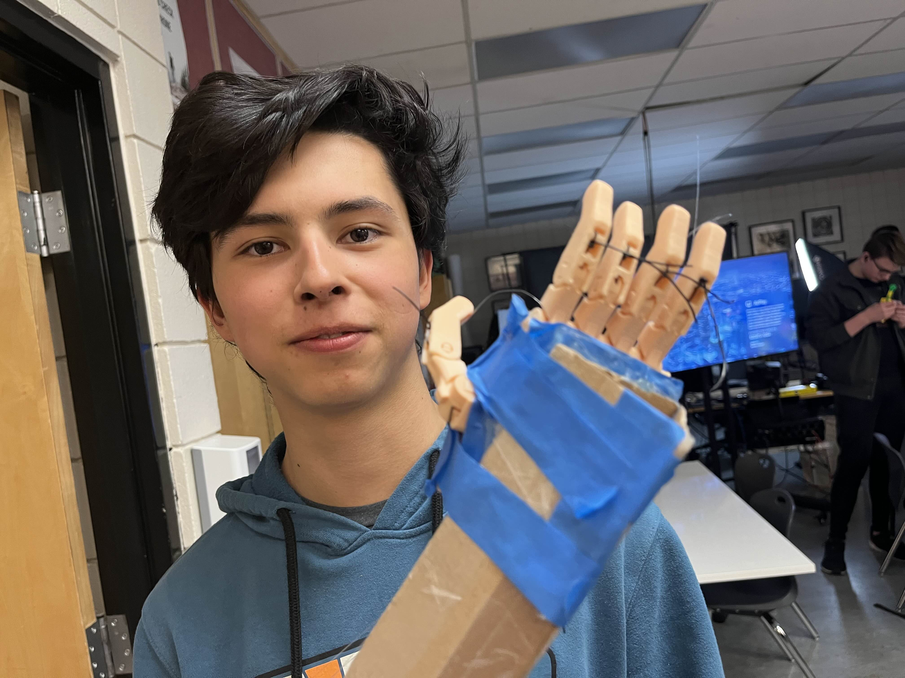
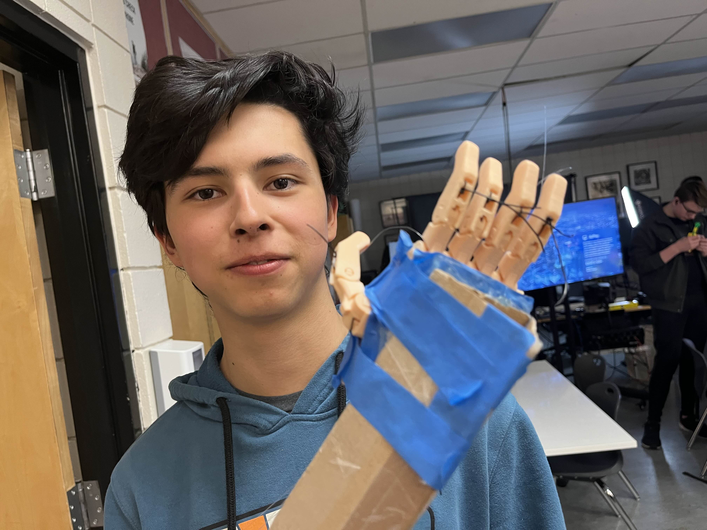

Project Overview
Motivated by an interest in prosthetics and adaptive devices, I designed and fabricated a Prosthetic Dexterous Hand Extension. Using SolidWorks, I modified an existing prosthetic hand design to improve finger maneuverability and grip efficiency. The enhanced hand was mounted to the end of a shaft, creating an arm extension operated through a system of cables and elastic bands.
The project served as a mechanical proof-of-concept, exploring the kinematics of prosthetic fingers and the role of material choices in grip performance. While this prototype was mechanically driven, I am considering future iterations that incorporate electrical control systems for enhanced dexterity.
Key Skills Developed
- CAD modeling in SolidWorks
- Material selection for mechanical performance
- Designing and executing testing procedures
- Iterative prototyping and design optimization
- Problem-solving in biomedical applications
Gallery

 

Engineering Challenges & Solutions
Finger Contraction Mechanism
Challenge: The original design only featured a tendon track along the back of each finger, limiting full contraction.
Solution: Added a second tendon channel along the inside for contraction, while using the outer channel with elastic cables for extension.
Design for Manufacturability
Challenge: Precise tolerances were needed around pin holes and moving joints.
Solution: Refined the CAD model with appropriate tolerances for smooth motion and real-world manufacturability.
Grip Strength Limitations
Challenge: Early prototypes slipped with objects heavier than ~200 g.
Solution: Applied higher-friction materials to the finger surfaces to reduce slip.
Small Object Handling
Challenge: Flat palm design limited grasping of narrow objects like pencils.
Solution: Modified palm geometry with added material, creating a more natural grip for precision handling.
Key Takeaways
- Applied SolidWorks to biomedical-inspired mechanical design.
- Learned to incorporate manufacturing tolerances in CAD models.
- Strengthened prototyping and iterative testing skills.
- Improved mechanical and usability performance in prosthetic mechanisms.